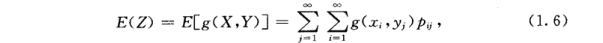
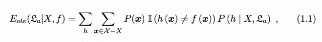
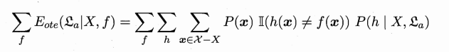
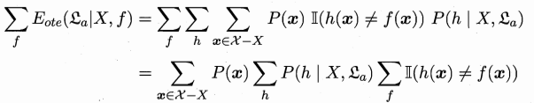
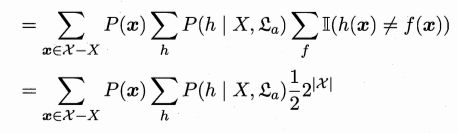

title: This is My first personal blog
date: 2018-03-15
categories:
- Machine Learning
tags:
- 机器学习
- 学习笔记
updates: 2018-05-15
[TOC]
#第一章
##1.1引言
机器学习是这样一门学科，它致力于研究如何通过计算的手段，利用经验来改善系统自身的性能。对人来说，经验可以是经历（直接经验）或者知识（间接经验）。对计算机来说，经验往往以数据的形式保存。
运用智慧，人可以学习新的经验。在互联网时代，任何人都能比以往更方便的获得更为海量的数据，但是，人的大脑并不擅长于处理海量的数据。由此看来，机器学习的重要作用将越来越明显。
作为初学者，我对于“机器学习”、“人工智能”、“神经网络”、“深度学习”等概念，也仅仅是听说过，对于它们的内涵和关系却一头雾水。
通过阅读，我初步搞清楚了：人工智能的实现方式之一是机器学习，神经网络是机器学习常用的一种方法，而深度学习可以看做是一种更复杂的神经网络。
##1.2基本英文词汇
阅读英文材料和文献是必须的，因此需要熟悉机器学习领域的专业词汇。
数据集（data set）；示例（instance）；样本（sample）；属性（attribnute）；特征（feature）；值（value）；属性空间（attribute space）；样本空间（sample space）；特征向量（feature vector）；维数（dimensionality）；学习（learning）；训练（training）；训练集（training set）；假设（hypothesis）；学习器（learner）；预测（prediction）；标记（label）；分类（classification）；回归（regression）；二分类（binary classification）；多分类（multi-class classification）；聚类（clustering）；监督学习（supervised learning）；无监督学习（unsupervised learning）；泛化（generalization）；独立同分布（independent and identically distribution）；归纳与演绎（induction and deduction）；偏差（bias）；统计学习（statistical learning）；决策树（decision tree）；数据挖掘（data mining ）；迁移学习（transfer learning）；类比学习（learning by analogy）；深度学习（deep learning）；集成学习（ensemble learning）；支持向量机（Support Vector Machine，SVM）
误差（error）；过拟合（overfitting）；欠拟合（underfitting）；采样（sampling）；分层采样（stratified sampling）；留出法（hold-out）；留一法（Leave-One-Out，LOO）；k折交叉验证法（k-fold cross validation）；自助法（bootstrapping）；调参（parameter tuning）；均方误差（mean squared error）；查准率（准确率，precision）；查全率（召回率，recall）；调和平均（harmonic mean）；置信度（confidence）；
学习的过程就是不断地把上面的生僻的词汇转化为熟悉的知识，并加以运用。
##1.3假设空间
以人获得经验的方式为例，首先，一个事物本身的规律是客观的，在最初的观察中，我们虽不能一下子正确地掌握这个规律，但可以把所有的假设先放在一起（假设空间），通过学习总结，逐渐地筛选，进而找出最符合事实的假设。
机器学习也是这样一个过程：对于一个用于训练的数据集来说，也存在许多用来描述这个数据集内在规律的假设，在所有假设组成的空间中，采用某种算法对进行搜索，进而找到与训练集相匹配的假设。
P5：版本空间，就是说，在假设空间中可能存在不止一种假设可以与训练集相符（显然训练集越小，越难以对假设进行剔除），这些假设的集合成为版本空间。版本空间中的每一个假设都可以描述这个数据集，因此选择哪一种假设就涉及到归纳偏好问题了。
##1.4归纳偏好
上面说到，当有很多假设都与训练集一致时，到底采用哪一个假设呢？因此在机器学习过程中，需要设置一个假设选择上的偏好，即称为归纳偏好（inductive bias）。
一个常用的理念是“奥卡姆剃刀（Occam’s razor）”，通俗的讲，就是不要用复杂的理论去解释那些用简单的理论就可以说明白的事情。换句话说，少的就是好的。
当然，对复杂多变的实际问题，奥卡姆剃刀既不是唯一的理念，也不一定是最好用的理念。NFL（No Free Lunch）定理告诉我们，必须结合实际问题进行分析。
###1.4.1 NFL定理
NFL定理证明了，聪明算法A与瞎蒙算法B在所有问题上的产生的总误差，即它们的期望性能竟然是一致的。这就是说，如果不结合实际问题，单纯的从数学的角度谈论一个算法的优劣是没有意义的。
####NFL定理的证明
本书的第一个难点，P8-P9的证明由于省略了太多关键步骤，如果不仔细琢磨，还真不容易一下子搞清楚。
首先，二维随机变量的函数的数学期望定义如下：

选取指示函数来表示算法的误差，则这个误差的期望值就可以用上述公式写出来:

注意这里的求和区间，样本的求和区间是剔除了训练集以外的所有样本（因为只有非训练集的数据才会产生误差），以及整个假设空间。于是就得到了一个算法针对训练集X产生的所有可能的假设，在所有除开训练集之外的数据上，与真实的目标函数f之间产生的误差的期望值。
显然，在不考虑实际问题的情况下，真实的目标函数f允许是任意的（例如经过一些特定点的曲线可能有无数条），于是对所有的f再进行一次求和，就得到了下式，这个式子表示了一个算法总误差的期望。

接下来的化简本书又省略了两个重要步骤，一是交换求和次序，二是对f求和时采用了均匀分布的假设。
####1.交换求和次序：

我在网上看到有人认为这里运用了乘法分配律，即把求和号作为一个整体与后面的各项进行了结合，其实不是这样的。这里运用的技巧是交换求和次序。交换求和次序的条件是后面的数列必须是绝对收敛的，在这个问题中，由于样本空间和假设空间都是有限的，所以是收敛性是绝对的，因此我们才可以交换求和次序而不影响结果。
将求和次序改变为：先对f求和，再对h求和，最后对x求和，就可以得到上式，过程很简单不再赘述。
####2.均匀分布假设：

这里先计算了对f的求和，可以发现指示函数对f的求和莫名其妙地就变成了一个数。书上给出的解释是，目标函数f和假设h要么一致，要么不一致，为了解这个问题，作者假设真实函数f在假设空间中均匀分布，于是就有1/2的f与h一致，1/2不一致，因为假设可以是样本空间到{0,1}的任意映射，于是假设空间的大小就是2^|样本空间|。所以求和的结果很显然就是上式的结果。
最后的化简结果就是，一个算法总误差的期望与算法的表达形式无关。

在实际应用中，所有问题并不是同等重要，而且目标函数也不可能是均匀分布的，但是NFL定理的意义仍然很重要，它告诉我们任何机器学习都不能脱离问题本身，而一味地追求数学上的技巧。
##1.5发展历程
主要介绍了机器学习的各个流派，详略。
##1.6应用现状
略。
总结：
入门机器学习需要扎实的概率论与数理统计的相关知识。
我参考的数理统计教材为以下两本：
《概率论与数理统计》高等教育出版社 第四版
《数理统计》北京航空航天大学出版社